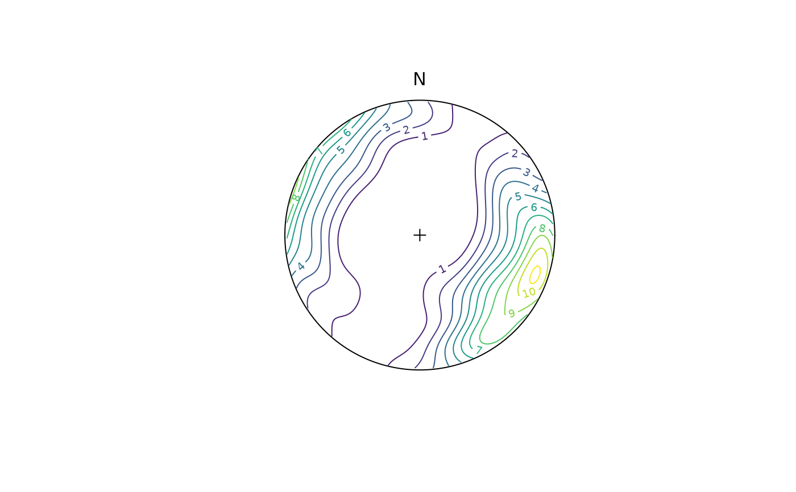
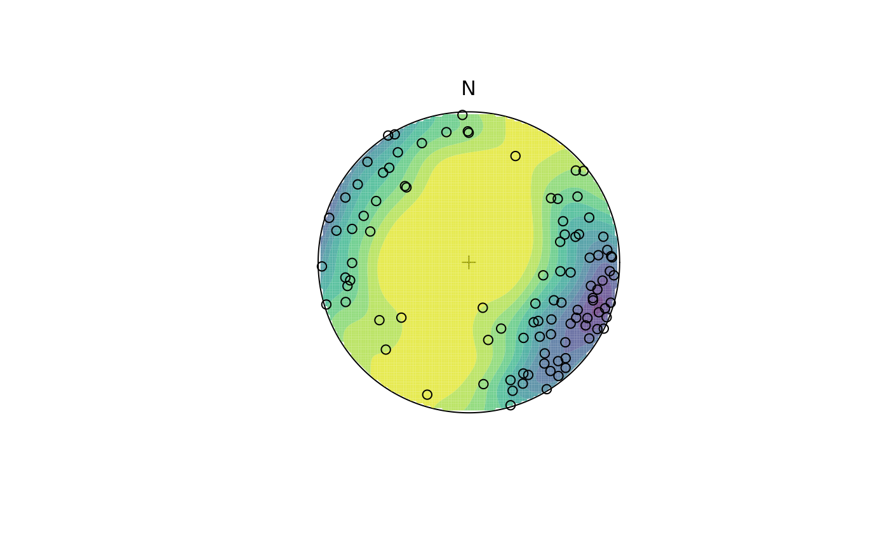
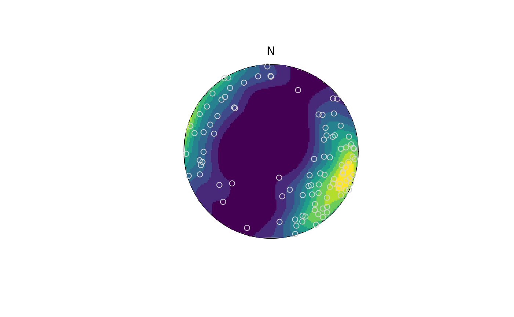

Kamb counts and densities on the sphere. contour plots the contour lines,
contourf displays a contour plot with the areas between the contours filled,
and image creates a dense grid of colored rectangles.
Usage
# S3 method for class 'spherical'
contour(
x,
add = FALSE,
density.params = list(),
nlevels = 10L,
col.palette = viridis::viridis,
col = NULL,
col.params = list(),
...
)
contourf(
x,
add = FALSE,
density.params = list(),
nlevels = 10L,
col.palette = viridis::viridis,
col.params = list()
)
# S3 method for class 'spherical'
image(
x,
add = FALSE,
density.params = list(),
nlevels = 10L,
col.palette = viridis::viridis,
col.params = list(),
...
)Arguments
- x
object of class
"Vec3","Line","Ray","Plane"or'spherical.density'(for plotting only).- add
logical. Whether the contours should be added to an existing plot.
- density.params
list of parameters passed to density.spherical
- nlevels
integer. Number of contour levels for plotting
- col.palette
a color palette function to be used to assign colors in the plot.
- col
colour(s) for the contour lines drawn. If
NULL, lines are color based oncol.palette.- col.params
list. Arguments passed to
col.palette- ...
optional parameters passed to
graphics::image()orgraphics::contour().
Value
list containing the stereographic x and coordinates of of the grid, the counts, and the density.
Examples
set.seed(20250411)
x <- rfb(100, mu = Line(120, 10), k = 5, A = diag(c(-1, 0, 1)))
contour(x)

contourf(x,
col.params = list(direction = -1, begin = .05, end = .95, alpha = .75)
)
stereo_point(x, col = "black", pch = 21)

image(x)
stereo_point(x, col = "lightgrey", pch = 21)

# complete example:
par(mfrow = c(1, 2))
wp <- 6 / ifelse(is.na(example_planes_df$quality), 6, example_planes_df$quality)
my_planes <- Plane(example_planes_df$dipdir, example_planes_df$dip)
fabric_p <- or_shape_params(my_planes)$Vollmer["D"]
my_planes_eig <- ot_eigen(my_planes)
stereoplot(guides = TRUE, col = "grey96")
points(my_planes, col = "grey", pch = 16, cex = .5)
contour(my_planes, add = TRUE, weights = wp)
points(my_planes_eig$vectors[3, ], col = "black", pch = 16)
lines(my_planes_eig$vectors[3, ], ang = 90, col = "black", pch = 16)
title(
main = "Planes",
sub = paste0(
"N: ", nrow(my_planes), " | Fabric strength: ", round(fabric_p, 2),
"\nLambert equal area, lower hemisphere projection"
)
)
my_lines <- Line(example_lines_df$trend, example_lines_df$plunge)
wl <- 6 / ifelse(is.na(example_lines_df$quality), 6, example_lines_df$quality)
fabric_l <- or_shape_params(my_lines)$Vollmer["D"]
stereoplot(guides = TRUE, col = "grey96")
points(my_lines, col = "grey", pch = 16, cex = .5)
contour(my_lines, add = TRUE, weights = wl)
points(sph_mean(my_lines, w = wl), col = "black", pch = 16)
title(
main = "Lines",
sub = paste0(
"N: ", nrow(my_lines), " | Fabric strength: ", round(fabric_l, 2),
"\nLambert equal area, lower hemisphere projection"
)
)